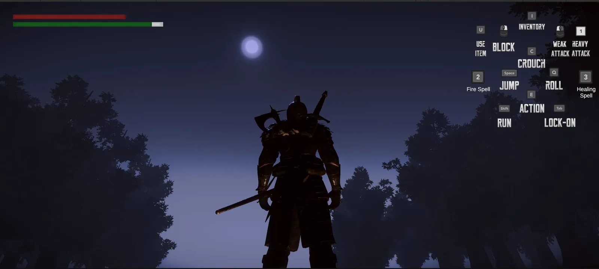
Abdulaziz Tayeb
Game Designer / Game Developer
Designing interactive experiences that make players feel something.
Selected work
Knight Night
A dark fantasy world assembled from existing assets into one cohesive action game. Dozens of systems, five distinct regions and a story that shapes how every place plays. Pre-alpha proof of concept.
View case study →MASTERM1ND
You play the hacker. Passwords, phishing, public Wi-Fi and charging ports become the puzzles. Featured in a 2025 HCII research paper.
View case study →Knight Night
A dark fantasy action game about a cursed knight hunting the five rulers who split his soul, and the work of making dozens of separate systems behave like one.
The first Knight Night teaser: in-engine footage with AI-generated storybook cutscenes.
The approach
Knight Night is built entirely from existing assets that I sourced and funded myself, working solo. The craft is in selection and integration: choosing pieces that belong to the same world, then bending them into one tone, one look and one set of rules.
The lore, powers, arenas, movesets and overall feel are my design. Some assets, including AI-generated character art, are placeholders until a full release.
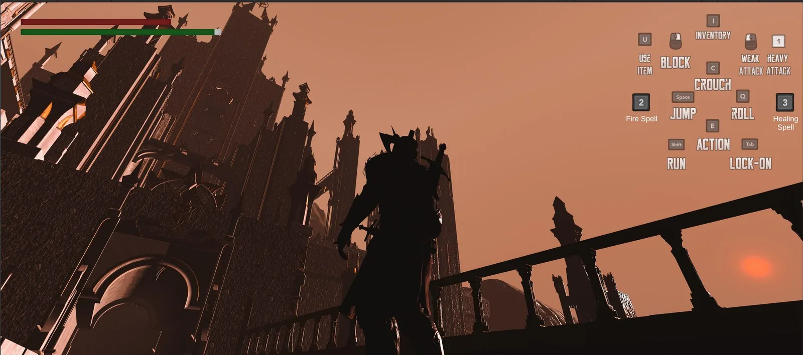
Five places, five moods
The story decides the place, and the place decides how the game plays. Each region has its own temperature, silence and pace. Scroll through, or tap an image to enlarge it.
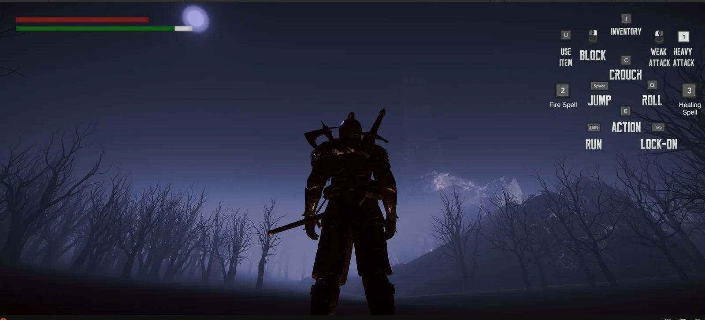
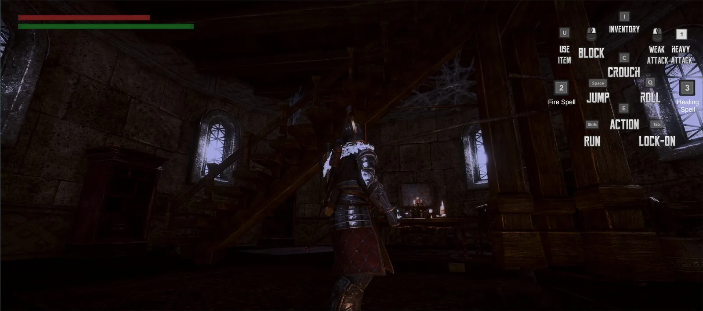
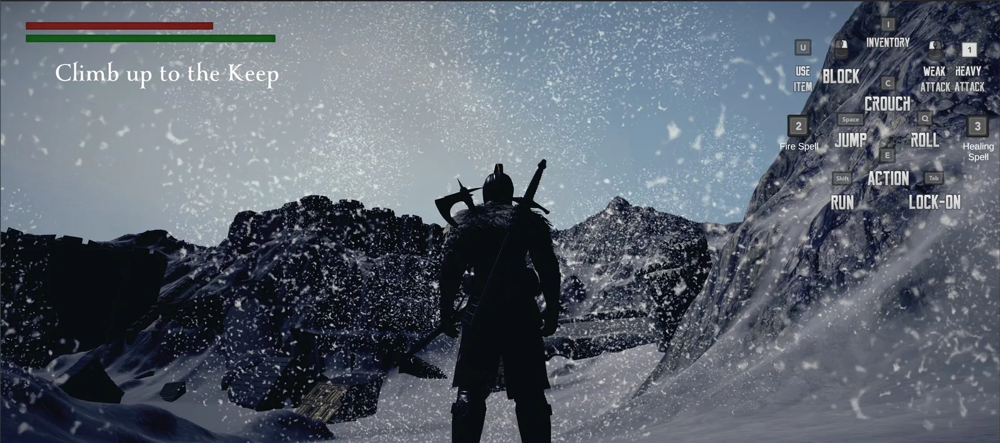
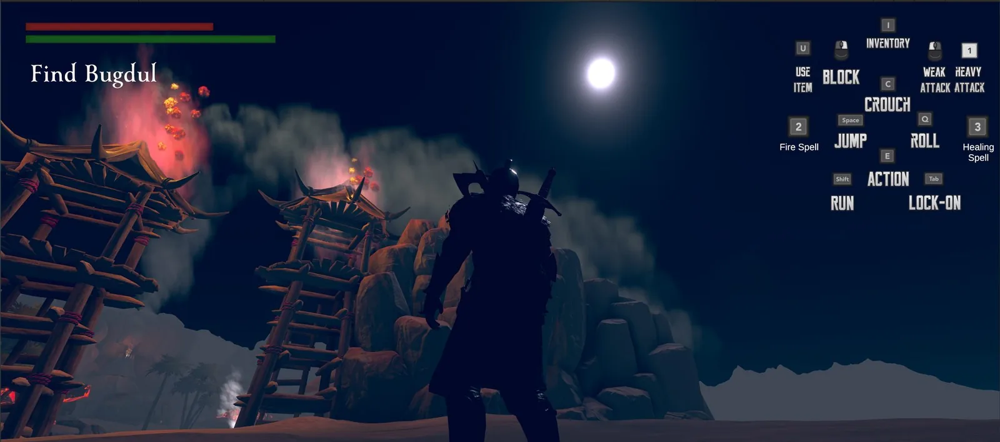
Feel & atmosphere
Footage with no commentary: how the game moves, sounds and feels to walk through.
Combat that fits the setting
Three weapon styles, magic, special attacks and equipment give the player a toolkit. Each region's big encounter is shaped by its setting: a climb that ends at a dragon's weak point, a duel on a bridge, a tower where the light shifts as a necromancer weakens.
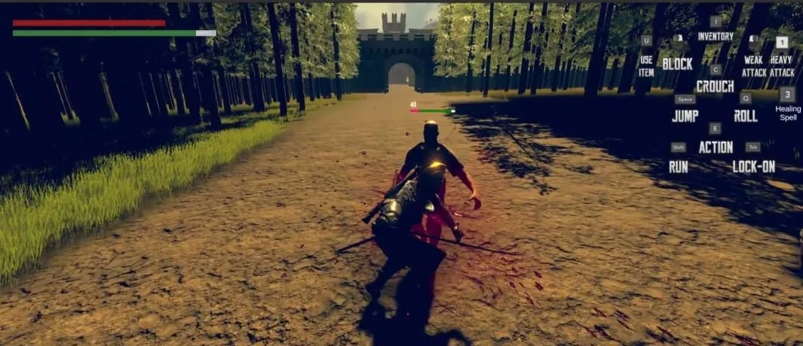
Narration & dialogue
Narration frames each stretch of the journey, and the people you meet speak in their own voices. The world explains itself while you're already moving through it.
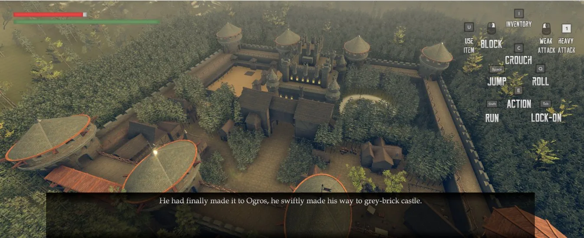
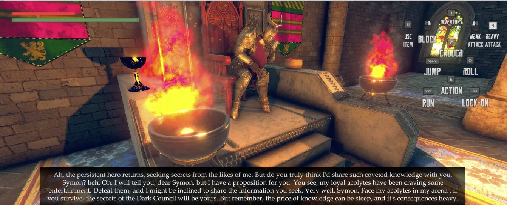
Boss presentation & in-game cinematography
Staged entrances, camera work and music cues, all running in the engine.
Tens of systems, one experience
A game looks simple when it works. Underneath, dozens of separate pieces have to agree with each other:
- Three combat styles + magic
- Weapon switching & special attacks
- Equipment & inventory
- Quests & narration triggers
- Cutscenes & dialogue
- Music & atmosphere switching
- Boss encounters, loot & ability unlocks
- Enemy behaviour & balancing
Every one of them touches others. A small change to a weapon's timing ripples through enemy pacing, boss fights and balance. Making them work in harmony took precision and constant small iteration, and it's the part of Knight Night I'm most proud of.
Best Unity Game
Annual Pro-Games Exhibition, Alfaisal University, December 2023
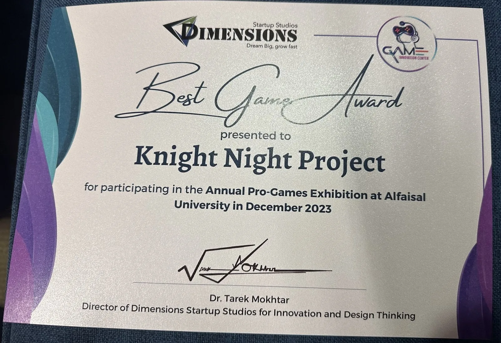
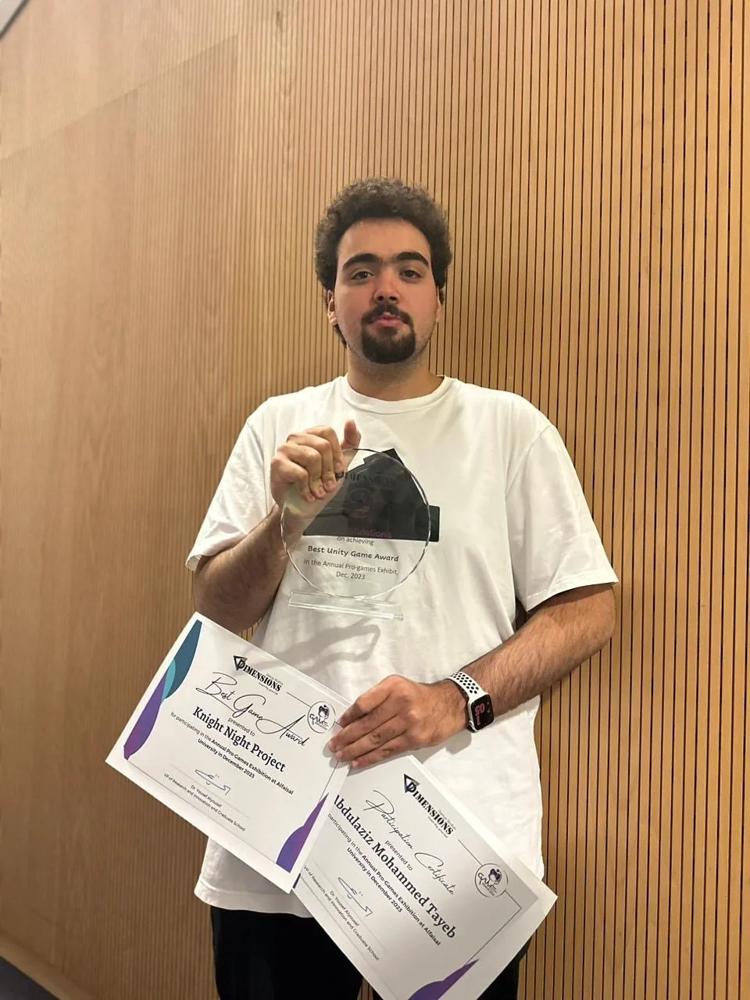
MASTERM1ND
What if learning cybersecurity felt like being the hacker? Each lesson is a mission, and the mistakes you'd make are the ones you're taught to avoid.
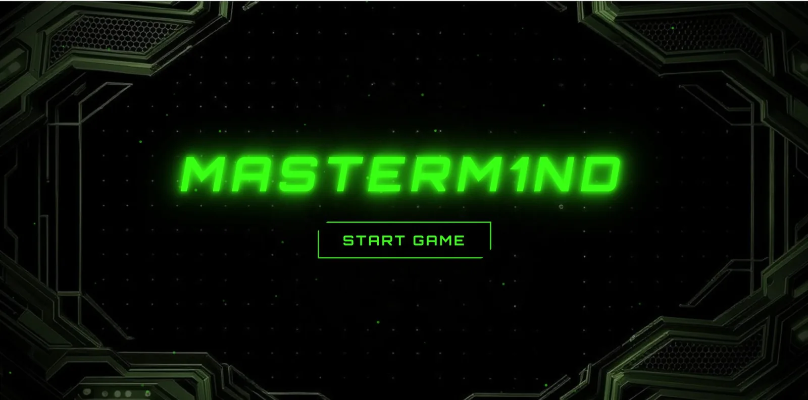
Published research
MASTERM1ND became a research paper, "MASTERM1ND: A Virtual Reality Web-Based Cybersecurity Awareness Game," published in the HCI International (HCII) proceedings in 2025, which I co-authored with my team.
In a preliminary survey of 20 mostly university participants, players reported a better grasp of password and phishing risks.
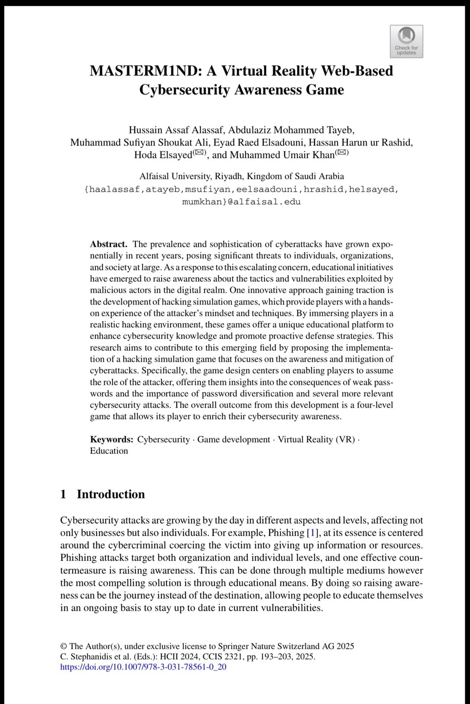
The story
You are Simon, a white-hat hacker sent after KA.OS, a group building a virus that could take down the web. Every level has a reason to exist in the mission, and a few let you watch KA.OS slip up from the inside. I wrote the story and directed how it was told.
Networks cutscene. AI-generated; I chose the voice, music and visuals.
Lessons as mechanics
Passwords become a guessing puzzle with escalating tiers, and the last tier is unbeatable on purpose, because that is the lesson. Phishing becomes four sorting challenges: spear phishing, smishing, vishing and email. Public Wi-Fi and a charging port become scenes where you watch what happens next, first-person at an airport. Lives, a timer and star ratings give each level stakes.
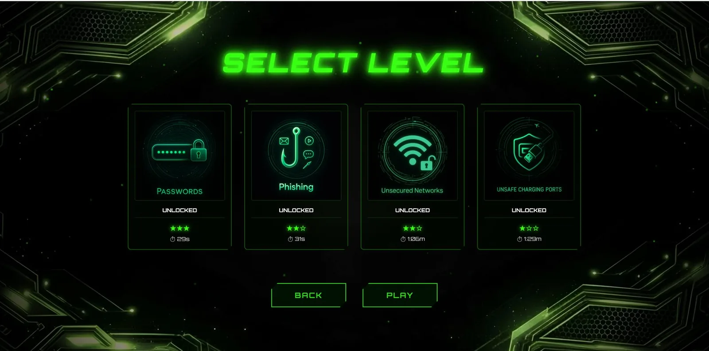
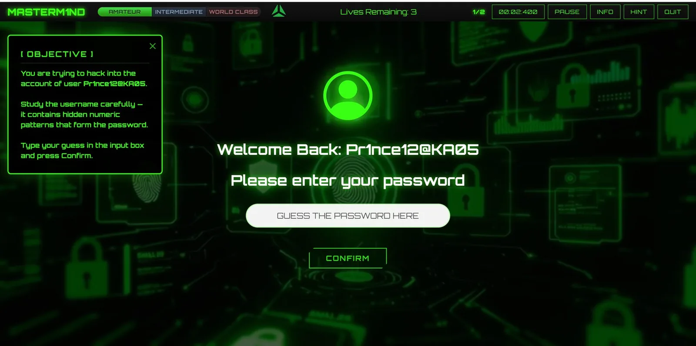
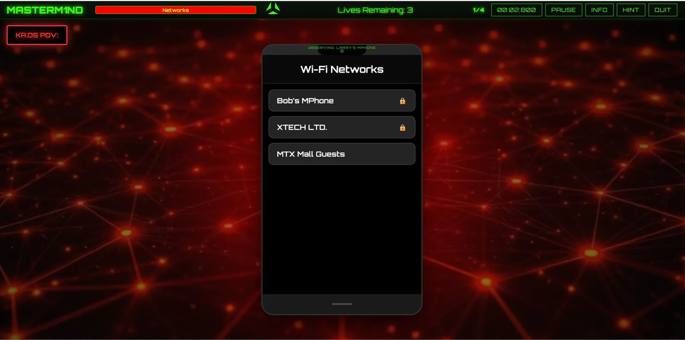
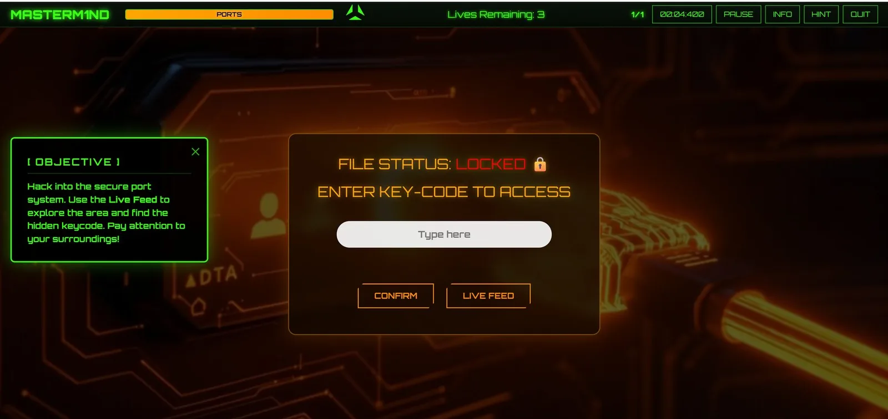
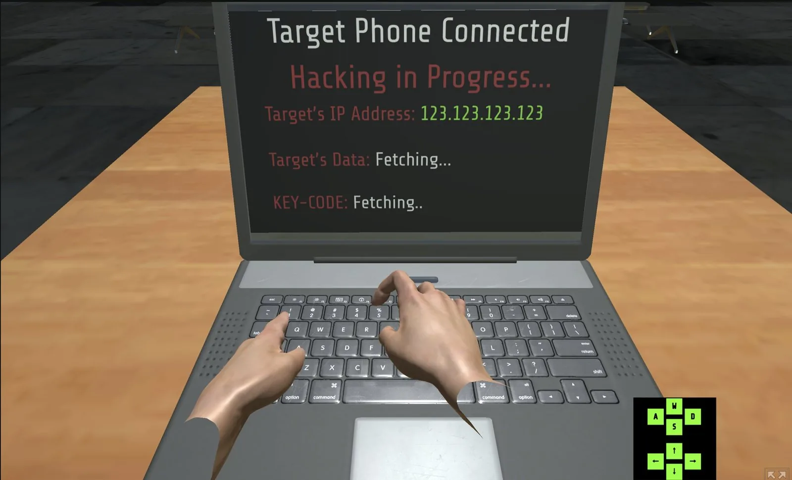
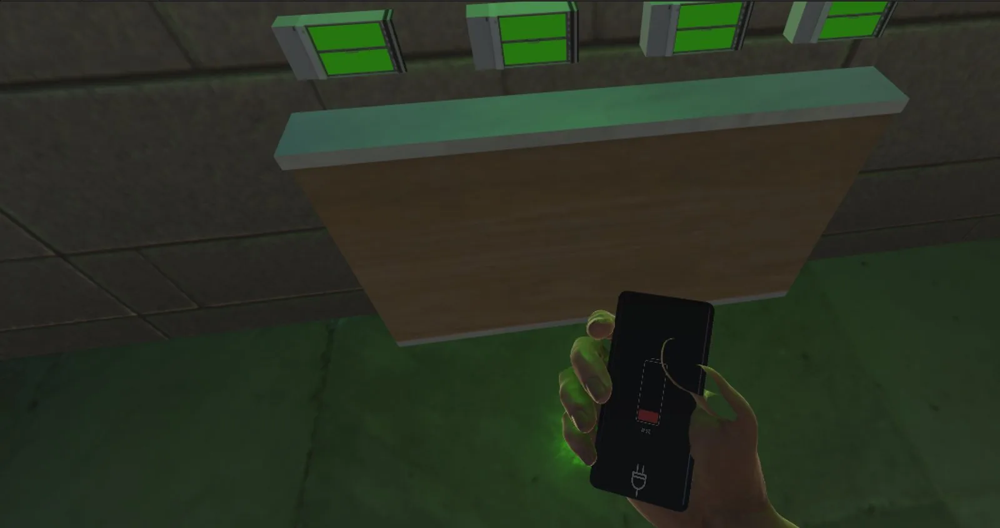
Look & sound
Black and neon green for the hacker feel, with a colour of its own for each level: red for KA.OS, magenta for phishing, orange for ports, hard edges, electronic music and arcade-style beeps. The team used ready-made assets, so the work was fitting them into one coherent identity.
Team & takeaways
I covered story, audiovisual direction, level mechanics, design direction, implementation support and documentation. Working in a team taught me to carry a design decision all the way into code and documentation so everyone builds toward the same thing. The excerpt shows how I documented the look and sound.
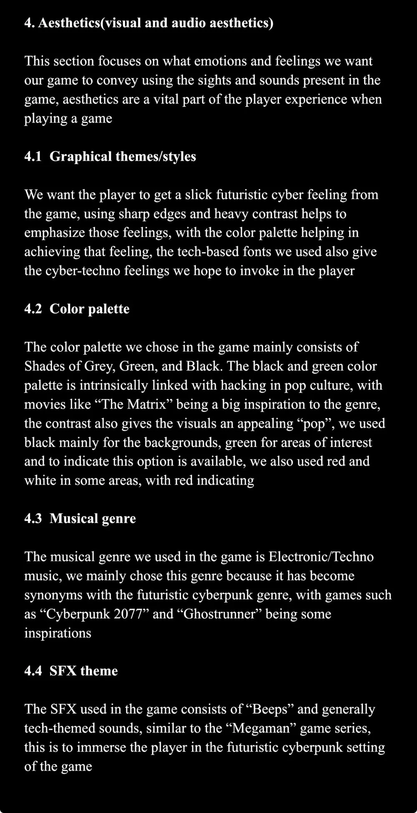
Gallery
Screens from both games. Tap any image to enlarge it, then use the arrows to browse.
Make the player feel something.
Every part of a game, from its story to its sound to the way a sword swings, should pull toward one feeling. Players don't watch the work. They walk through it.
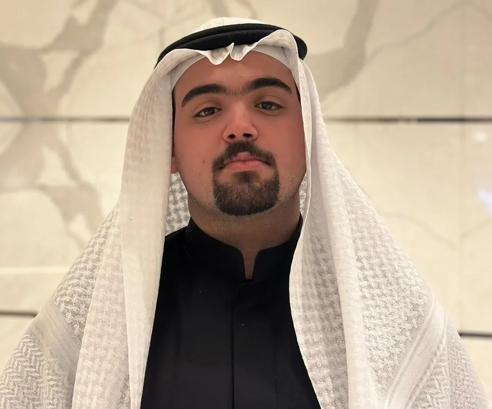
About me
I'm a Software Engineering graduate from Alfaisal University, drawn to the place where story, atmosphere and gameplay meet. I like building worlds and making all the parts of a game agree with each other.
I've spent years making games in Unity, learning by building and iterating. Knight Night is my solo, end-to-end project, a world assembled and tuned into one experience. MASTERM1ND is my team project, a published research game.